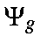

Next: Permutations Up: Multi-Electron Configuration Interaction Previous: Starting electronic configuration


Next: Permutations Up: Multi-Electron Configuration Interaction Previous: Starting electronic configuration
Microstates, which are normally represented by a Slater determinant, are normally written as an antisymmetrized product of p a- and q b-electrons:
where [(p+q)!]1/2 is the normalization constant, P is an operator which permutes the electron coordinates, and (-1)P assumes the values -1 or +1 for odd and even permutations respectively. A more compact and useful notation for representing a general microstate is:

where Yj is any microstate consisting of N electrons. Given the full set of M.O.s, a subset of these is used in the microstate. This subset is defined by the M.O.s Ykj , k=1,N. Each microstate will consist of a different set of M.O.s from the full set.
Rather than having all the a electrons appearing first in a microstate, it is more convenient to order the one electron wavefunctions in the order in which their indices occur in the full set of M.O.s. If both a and b M.O.s of the same index occur, then a precedes b, thus:
This numbering scheme follows the Aufbau principle, in that the order of filling is in order of energy. This point is critically important in deciding the sign of matrix elements. For a 5 M.O. system, then, the order of filling is:
A triplet state arising from two microstates, each with a component of spin = 0, will thus be the positive combination:
This standard sign convention was chosen in order to allow the signs of the microstate coefficients to conform to those resulting from the spin step-down operator.
Only those M.O.s involved in the MECI are of interest, thus from the full set of M.O.s, filled and empty
the ground-state configuration (assumed to be closed shell for simplicity) can be represented by
where a 1 represents a spin molecular orbital occupied by one electron and 0 represents an empty M.O.
The M.O.s involved in the C.I. are called the "active space". For convenience, the index of the M.O. at the lower bound of the active space will be called "B", and the index of the M.O. at the upper bound of the active space will be called "A". All M.O.s below the active space can be considered as part of the core while those above it are empty and can likewise be ignored. We can thus focus our attention on the M.O.s in the active space. Most of the time, MECI calculations will involve between 1 and 5 M.O.s, so a system such as pyridine, with 15 filled levels and 29 M.O.s, would use M.O.s 13-17 in a large C.I.
For convenience, microstates will be expressed as a sum of molecular orbital occupancies, so that:
For example, if the ground state configuration is closed shell, then the occupancy of the M.O.s would be
Microstates are particular electron configurations. Examples of microstates involving 5 electrons in 5 levels are given in the Table.
Table:
Microstates for 5 electrons in 5 M.O.s|
|
Electron Configuration |
|
|
Electron Configuration |
|
||
|
|
Alpha |
Beta |
MS |
|
Alpha |
Beta |
MS |
|
M.O. |
1 2 3 4 5 |
1 2 3 4 5 |
|
M.O. |
1 2 3 4 5 |
1 2 3 4 5 |
|
|
1 |
1,1,1,0,0 |
1,1,0,0,0 |
1/2 |
4 |
1,1,1,1,1 |
0,0,0,0,0 |
5/2 |
|
2 |
1,1,0,0,0 |
1,1,1,0,0 |
-1/2 |
5 |
1,1,0,1,0 |
1,1,0,0,0 |
1/2 |
|
3 |
1,1,1,0,0 |
0,0,0,1,1 |
1/2 |
6 |
1,1,0,1,0 |
1,0,1,0,0 |
1/2 |


Next: Permutations Up: Multi-Electron Configuration Interaction Previous: Starting electronic configuration